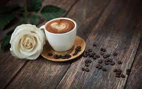
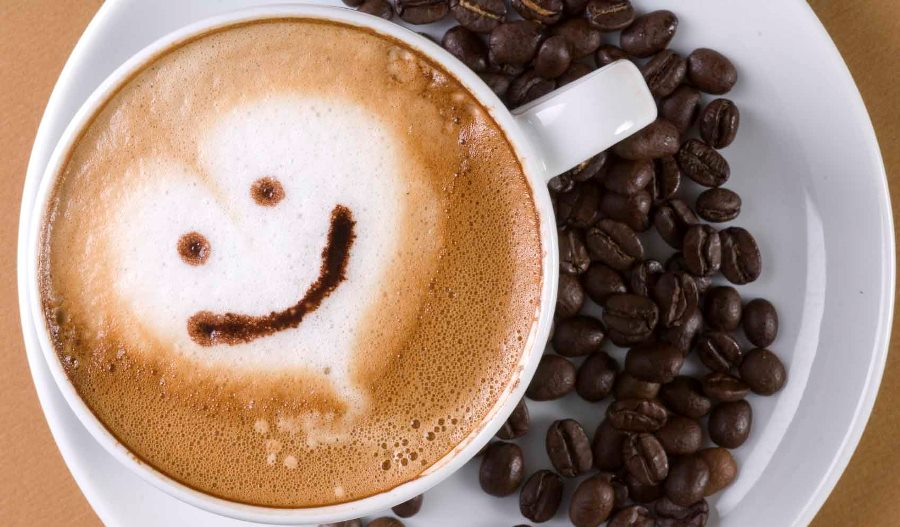

Львівська майстерня шоколаду
Кава та сувеніри
Наш прайс

Реєстрація
Магазин
Зареєструйтесь, щоб отримати знижки на Різдвяні свята
Кава, розм. кофе — напій, що виготовляється зі смаженого насіння плодів — «бобів» кавового дерева. Кава найбільше цінується через виражену збадьорливу дію, завдяки вмісту алкалоїдів кофеїну та теоброміну. Кава культивується з давніх часів і займає важливе місце в кулінарних традиціях багатьох культур світу.

Кава, розм. кофе — напій, що виготовляється зі смаженого насіння плодів — «бобів» кавового дерева. Кава найбільше цінується через виражену збадьорливу дію, завдяки вмісту алкалоїдів кофеїну та теоброміну. Кава культивується з давніх часів і займає важливе місце в кулінарних традиціях багатьох культур світу.
Кава, розм. кофе — напій, що виготовляється зі смаженого насіння плодів — «бобів» кавового дерева. Кава найбільше цінується через виражену збадьорливу дію, завдяки вмісту алкалоїдів кофеїну та теоброміну. Кава культивується з давніх часів і займає важливе місце в кулінарних традиціях багатьох культур світу.
Кава, розм. кофе — напій, що виготовляється зі смаженого насіння плодів — «бобів» кавового дерева. Кава найбільше цінується через виражену збадьорливу дію, завдяки вмісту алкалоїдів кофеїну та теоброміну. Кава культивується з давніх часів і займає важливе місце в кулінарних традиціях багатьох культур світу.